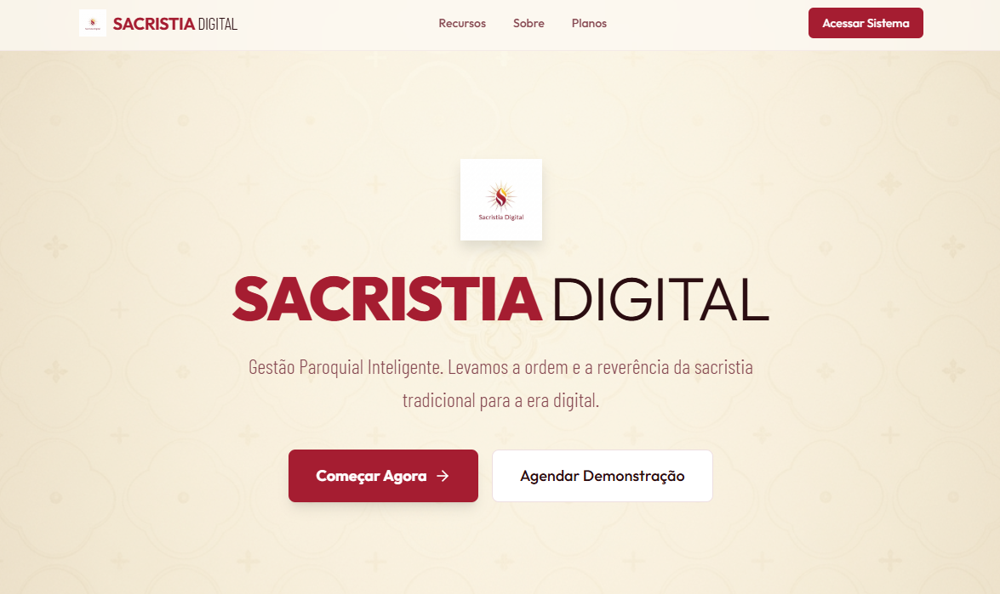
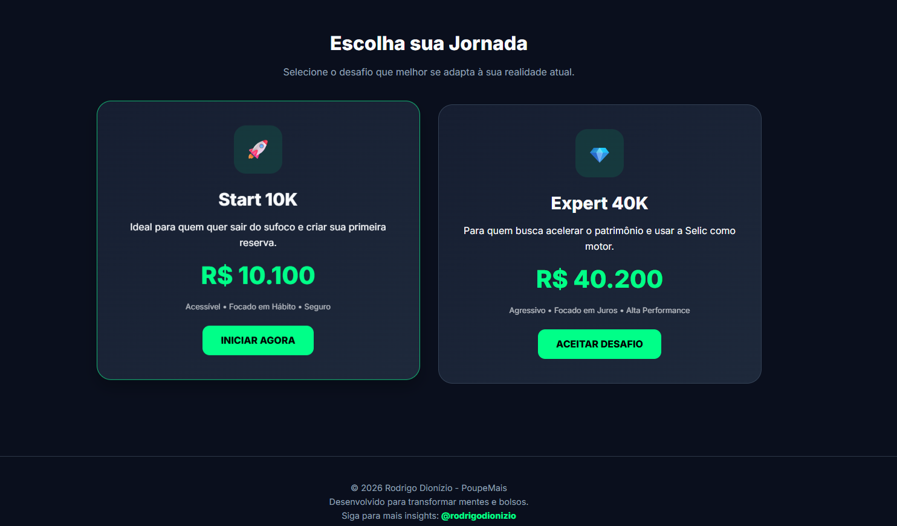
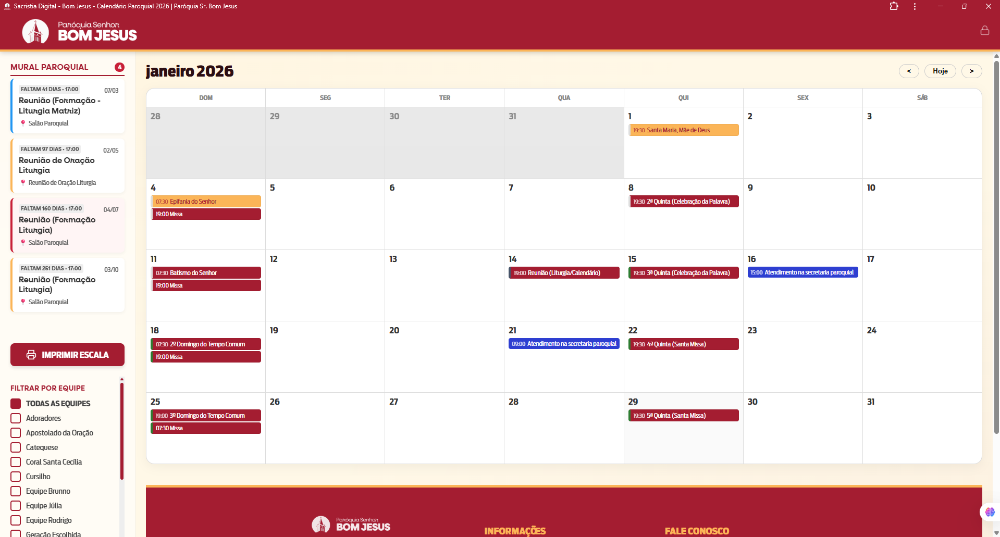

Professor de Informática | Desenvolvedor Full Stack | Especialista em Infraestrutura
23 anos transformando conhecimento técnico em soluções práticas e formando profissionais de TI. Combino expertise em desenvolvimento web moderno com experiência docente consolidada.
Professor PEB I - Governo de Minas Gerais
Experiência consolidada em cursos técnicos (2013-2014 e 2023-atual), lecionando Lógica de Programação, Planilhas Eletrônicas e Informática para Internet. Mais de 100 alunos formados com metodologia própria focada em aprendizado prático e real.
Full Stack Developer
Desenvolvedor Full Stack com portfólio em Next.js, React e TypeScript. Criação de soluções SaaS escaláveis, APIs robustas e interfaces modernas. Experiência com arquitetura de sistemas e boas práticas de desenvolvimento.
23 anos de experiência
Chefe do Departamento de TI da Prefeitura de Itabirinha desde 2002. Expertise em redes LAN/WLAN, servidores Windows, Active Directory, bancos de dados SQL e segurança da informação. Certificação Furukawa em cabeamento estruturado.
Liderança & Gestão
Gestão de projetos e equipes, comunicação efetiva, resolução criativa de problemas e aprendizado contínuo. Capacitação de mais de 200 servidores públicos em sistemas corporativos. Habilidade para traduzir conceitos técnicos complexos em linguagem acessível.
"Transformando conhecimento técnico complexo em aprendizado acessível há mais de duas décadas. Minha missão é formar profissionais preparados para os desafios reais do mercado de TI."
Governo do Estado de Minas Gerais
Docência em Curso Técnico em Informática com ênfase em Internet. Disciplinas: Lógica de Programação, Planilhas Eletrônicas e Informática para Internet. Desenvolvimento de planos de aula, material didático prático e metodologias ativas. Mais de 100 alunos formados com preparação para o mercado de trabalho.
Prefeitura Municipal de Itabirinha
Liderança técnica e gestão completa da infraestrutura de TI municipal. Desenvolvimento de soluções web institucionais, administração de bancos de dados SQL Server e PostgreSQL, gerenciamento de redes LAN/WLAN e servidores Windows Server com Active Directory. Capacitação de mais de 200 servidores públicos em sistemas corporativos. Modernização tecnológica com redução de 60% nos custos operacionais.
Diversos Clientes (SERTEC, Vila Nova, outros)
Administração de servidores Windows, roteadores MikroTik e infraestrutura de rede corporativa. Suporte a ERP Alterdata (RH, Tributos, Contabilidade). Implementação de soluções de VPN, firewall e segurança de rede. Suporte técnico remoto e presencial a usuários corporativos.
Prefeitura Municipal de São José do Divino
Administração completa da infraestrutura de TI municipal. Suporte técnico a todos os setores administrativos. Gestão de redes, servidores e sistemas corporativos.
Governo do Estado de Minas Gerais
Primeira experiência docente em Curso Técnico em Informática. Aulas de Informática Básica e Aplicada, fundamentos de TI, hardware, sistemas operacionais e aplicativos de escritório. Gestão de laboratório e acompanhamento pedagógico individualizado.
TOTVS S.A. - Unidade Leste de Minas
Suporte técnico a clientes do sistema RM (Gestão Educacional). Desenvolvimento de consultas SQL complexas e relatórios customizados. Análise e resolução de problemas em banco de dados e aplicações.

Desenvolvimento SaaS
Plataforma SaaS completa para gestão paroquial com sistema de autenticação, painel administrativo e dashboard analítico. Arquitetura multitenancy com gerenciamento de usuários, permissões e módulos de gestão litúrgica.


Projeto de Infraestrutura
Implantação completa de Wi-Fi corporativo, firewall MikroTik, organização de racks e redes segmentadas para empresa de análises clínicas. Projeto executado em 3 meses com alta disponibilidade e segurança.
Conectividade Segura
Implementação de VPN e infraestrutura MikroTik interligando pontos remotos de laboratório de análises clínicas com segurança e confiabilidade. Conectividade 24/7 para operações críticas.
Infraestrutura Completa
Implantação de datacenter completo com rack 24U, rede estruturada, CFTV, telefonia IP e servidor para indústria de laticínios. Projeto de 4 meses incluindo cabeamento certificado Furukawa.
Itabirinha, Minas Gerais, Brasil